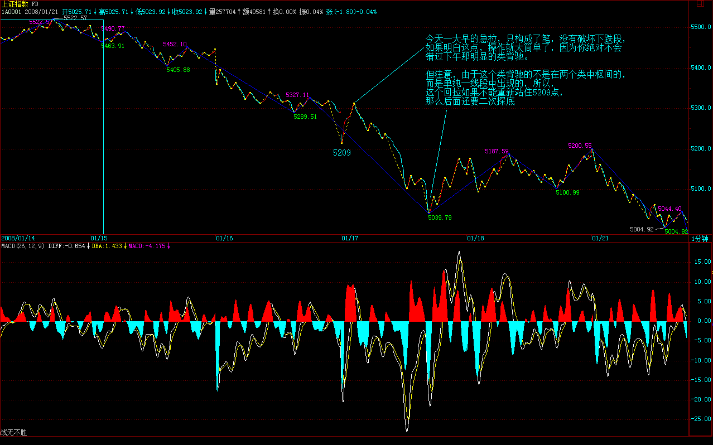
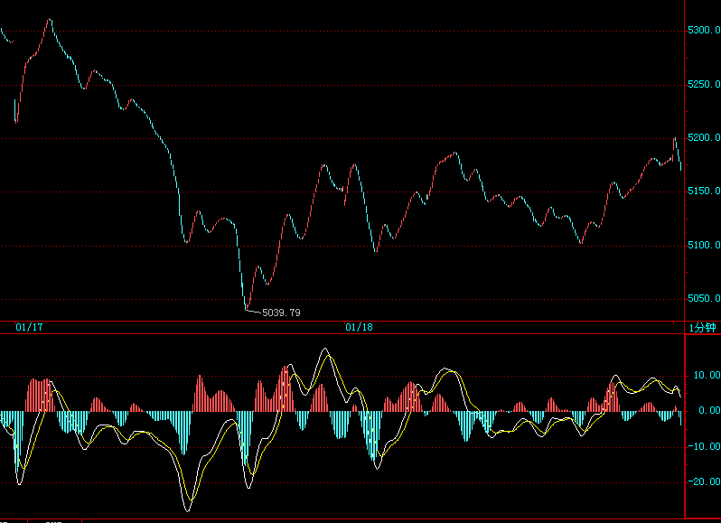
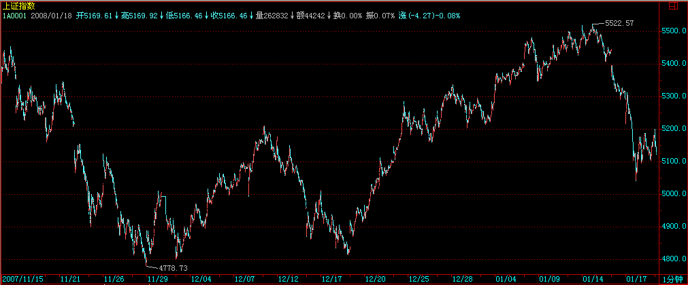
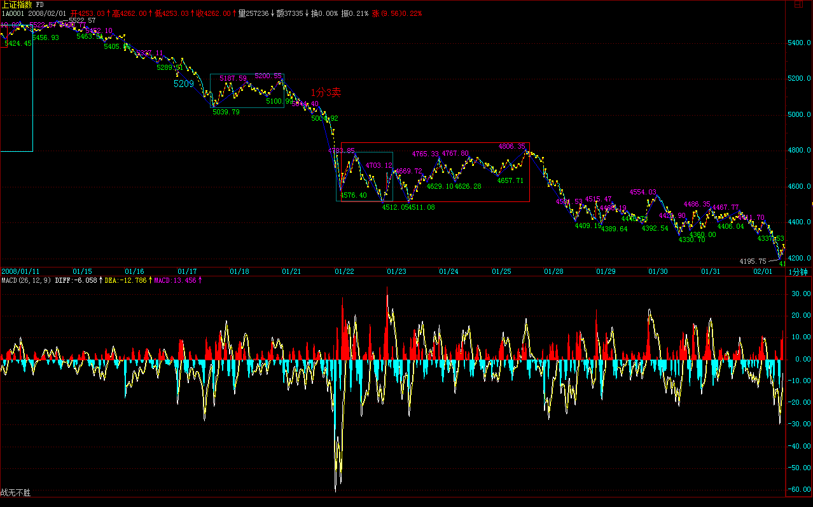

|
 |
教你炒股票93：走势结构的两重表里关系2
(2008-01-15 18:08:05)
显然，所有问题都集中在（1，0）或（-1，0）之后怎么办，如果这两种情况后只有一种情形，那当然不错，可惜这世界没有这么简单，（1，0）或（-1，0）之后，都有（1，1）、（-1，1）两种可能。
以（1，0）为例子，（-1，0）的情况反过来就是。（-1，0）这个信号是绝对明确，毫不含糊的，任何人都可以唯一地去确定。那么，一个同一的信号，对于不同的人，处理的方法是不同的，这和每个人的水平相关：
一、如果你震荡操作的水平一般，而又胆子比较小，又没时间、跑道，喜欢落袋为安的，那么，一个足够周期的（1，1）后出现（1，0），例如周的或日的，这意味着已经有足够的获利空间，这时候，最简单的作法就是把成本先兑现出来，留下利润，让市场自己去选择，不费那个脑子了。
剩下的筹码可以这样操作，就是（娇：假设）如果出现（-1，1），那么意味着低周期图上肯定（娇：先）也出现（-1，1），那么在这个向下笔结束后回来的向上笔只要不创新高，就可以把剩余筹码扔掉。例如周的，你可以看日或者30分钟周期的低周期。当然，还可以直接就看周的5周均线，只要有效跌破就走，这可能更简单。
二、如果你震荡操作水平比较好，就利用（1，0）后必然出现的震荡进行短差操作，由于都是先卖后买，所以如果发现市场选择了（-1，1），那么最后一次就不回补了，完全退出战斗。
注意，利用短差操作时，一定要分析好这个（1，1）到（1，0）所对应的走势类型，例如一个周线上的（1，1）到（1，0），必然对应着一个小级别的上涨，至于这个级别是1分钟还是5分钟、30分钟，那看具体的图形就一目了然了。
（1，0）的出现，有两种可能的情形，一、该对应的上涨出现明确的背驰完全地确认结束，那么整个震荡的区间，就要以上涨的最后一个中枢为依据，只要围绕着该区间，就是强的震荡，否则，就肯定要变成（-1，1）了，就是弱的震荡了。弱的震荡，一般一旦确认，最好还是不参与。等出现（-1，0）再说了。
（娇补注：二、(1,0)的出现，该对应的走势类型为盘整背驰，那么震荡的区间以本中枢为依据，只要围绕着该区间，就是强的震荡，否则，就肯定要变成（-1，1）了，就是弱的震荡了。弱的震荡，一般一旦确认，最好还是不参与，等出现（-1，0）再说了。)
三、如果市场最终选择（1，1），那么这个（1，0）区间就有着极为重要的意义。这区间上下两段的（1，1），就可以进行力度比较，一旦出现后一段力度小于前一段，就是一个明确的见顶信号，然后根据对应的走势类型进行区间套定位，真正的高点就逃不掉了。
上面，把可能的操作进行了分类说明，方法不难，关键是应用时得心应手，这可不是光说就行的。最终能操作到什么水平，就看各位自己磨练的工夫了。
==================================================================================================
注：
（1，0）或（-1，0）之后怎么办？ 以1，0为例，-1,0 倒过来。
1 足够周期的（1，1）后出现（1，0）卖出成本留利润， 利润看各K线周期分型和笔配合操作。或者看5单位线，跌破走人。
2 利用分型对应的中枢震荡操作，观察小级别盘背以及3买卖后中枢扩展成中继分型还是3买卖后中枢移动。 有小级别盘背或3卖后类背中枢扩展后还要注意向上走势有无3买，若无，中枢震荡成向下笔概率就大了。 中枢震荡还有个区间问题，围绕最后个中枢的震荡才是健康的。
3 市场（1，0）后选择（1，1），两段（1，1）可以进行力度比较，一旦出现后一段力度小于前一段，就是一个明确的见顶信号，然后根据对应的走势类型进行区间套定位，真正的高点就逃不掉了。
==================================================================================================
娇注：
中阴阶段的辅助判断：
1中枢震荡监视器 2 BOLL 3 震荡的中走势类型是盘整还是趋势 4中枢震荡相对于前中枢的位置 5中枢震荡和小级别分型辅助
读后感：
1、“ 显然，所有问题都集中在（1，0）或（-1，0）之后怎么办，”
2、 “注意，利用短差操作时，一定要分析好这个（1，1）到（1，0）所对应的走势类型，”
大盘又见亮晶晶
(2008-01-16 15:17:40)
昨天说“并不排除有一到两天让大家再次想起亮晶晶的机会”，结果，今天那花旗参大作广告，使得大盘又见亮晶晶，严重怀疑亮晶晶暗中代理了花旗参的销售。
中投公司，前段时间不是牛哄哄地趁底买这股权那股权，现在花旗参来了，中投公司是不是又想把一千几百亿往里面填数堵窟窿呢？
中国人该干什么，本IDN年前的人民币与货币战争里就说清楚了。中国人根本没必要去美国人的地头玩，中国人要烂也只能烂在自己的锅里，自己创造一个全世界的市场，别人爱来不来，我们就自己玩了，憋死你们。十三亿中国人难道还要请3亿的美国鬼子来才可能开桌打麻将？甚至还要漂洋过海去纽约开麻将桌？可笑！
当然，如果你今天把本ID说的股票当成自选股，没看指数，那么，今天好多无耻地放红，不少更无耻地创出新高，完全没美国鬼子什么事。不过，这种情况，如果过分延续，是不好的，太脱离指数也不好，所以下面还是探讨一下指数的问题。
显然，今天的走势对多头来说，并没有什么大不了的，甚至是多头所乐于看到的。这原因，昨天已经说了。技术上，今天的缺口有着极强的技术意义，如果三天之内不回补，那么大盘后面的压力就进一步加大。下面关键是5209点的颈线位置，这位置只要不有效跌破，大盘就依然在多头的控制之中。
短线上，5522点下来的这个线段的类下跌过程十分技术化，两个类中枢也十分明显，下面就是这类下跌的类背驰问题了，一旦出现，就是一次有力度的反弹，关键是这反弹能否突破第二个类中枢的牵制，如果不行，那么缺口的回补就有困难，所以这才是技术上的关键。
日线上，昨天的顶分型后，现在延伸成笔的可能太大了，只要明天有新底就基本确定，所以，稳健的角度，可以等底分型才会有真正的站稳可能，所以这个类背驰能否最终制造出底分型，就是进一步考察的关键。
个股方面，很多股票会继续表现的，当然，如果你觉得心脏受不了，可以先把本拿出来，例如600737之类的，剩下利润在里面继续。有些股票，会涨到你不相信，等你相信了，就是井了。
出一次差，到深圳开一个和PE有关的股东会议，后面几天，晚上的帖子，可能保证不了了，不过解盘还是保证的。
先下，再见。
不会享受大震荡的人股票就没入门
(2008-01-17 15:14:57)
当然并不是本ID去深圳，所以就深深地把各位深圳了一把，千万别这样想，否则本ID肯定不能再去长沙了。 亮晶晶一、两天，今天不过就是第二天，多么优美的节奏，不懂得欣赏，太浪费剧本费、排演、场租了。 当然，享受有不同级别，一种是被动型的，一种是主动型。被动的就不说了，都是电梯广告的最好代言。而主动型的，就要靠技术了。
别小看了最基础的分段技术，5522点下来，近500点，就是一个线段的类下跌，你明白了，就主动了，就享受了。为什么？最猛烈的中枢移动中，往往就是一个线段的类趋势，所谓的单边跌势或涨势，就是这玩意，明白了，你说你能不爽吗？ 今天一大早的急拉，只构成了笔，没有破坏下跌段，如果明白这点，操作就太简单了，因为你绝对不会错过下午那明显的类背驰。
但注意，由于这个类背驰的不是在两个类中枢间的，而是单纯一线段中出现的，所以，这个回拉如果不能重新站住5209点，那么后面还要二次探底。

本周开始时已经说了，春节前要出点情况，就是这周了，后面，就要逐步营造点和谐的气氛，但在营造和谐之前，首先要营造的是恐怖，没有恐怖，把不坚定分子彻底清洗，哪来和谐啊？
个股方面，昨天的提示已经足够明确：“这种情况，如果过分延续，是不好的，太脱离指数也不好”、“如果你觉得心脏受不了，可以先把本拿出来，例如600737之类的，剩下利润在里面继续”，今天早上，这些股票都有红盘，000822之类的甚至还有新高让各位去反应，如果你没反应，那本ID也没办法了。总不能举着杠铃让最没反应的人去反应吧，如果这样，这就不是市场，而是童话世界了。
至于600319今天还涨停，那不过是一个态度问题，这里的老人大概都知道，就算是530最恶劣的时候，本ID说的股票里还总有一两只顽强地红盘的，注意，一定要声明这可和本ID无关，那大概是电脑出毛病了，抽筋了。
注意，现在没必要追高买股票，注意调整中洗盘洗干净后准备重新启动的，还有就是前期不动，有新资金介入的，但所有的前提是，大盘的恐怖期过去了。
明天周末效应，震荡肯定还会有，但如果没有什么特别的东西，幅度会逐步小下来的，其他，等过了周末，看看消息面、政策面情况再选择。
技术高的，现在是游戏的黄金期，一个30分钟的震荡，操作好了，收益比单边还要高，特别对资金不大的散户。没这水平的，就把仓位控制在适当范围，也就是可以睡觉睡好的范围，等日的底分型出现再说了。
先下，再见。
今年投资者的四种命运
(2008-01-18 11:45:59)
下午一收盘就开始股东会，没时间写解盘，晚上，这群家伙不会放过本ID的，周末有时间再补上，抱歉了。
早上走势，和昨天说的一致，就是两天的亮晶晶后，震荡还有，但幅度变小，但由于5209点没重新站住，大盘总体还在一个剧烈震荡后的平复期，依然有较大不稳定因数与情绪需要时间平复，另外，周末的政策消息面以及外围因素，依然有巨大的心理影响。
下面，把写好的一帖子贴上来，算是今天的帖子了。
在去年底的今年展望中，已经明确指出今年走势的多变性与操作难度。
今年“与井同行”，一般来说，没有足够的自我意识，企图靠拐杖的人，今年都会比较麻烦。投资，是一种专门的学问，前提是，你首先是一个有思想的人，而不是一个木偶。
就像在那篇关于剧本的帖子里本ID说的，就算把剧本告诉你，很多人最终还是要落井。为什么？因为，首先很多人大概都是跟着孔男人学的中文，中文理解力几乎为0，剧本可能也读不懂。例如，当时写的这一段：“ 剧本里对5860到5912这个缺口很不满意，已经准备了不少胶水，不过还有点缺货，什么时候把剩余的胶水准备齐了，关键看在5462到5675点时间段内政策面的风向，风向不对，那就先把买胶水的钱换成买棒棒糖的，一人一个棒棒糖，看你要棒还是糖。”
如果你竟然能理解成大盘一定要先到5675点，那么，就去找孔男人追讨中文的学习费用吧。请问，5522点是否5462点到5675点之间？请问，这时候发棒棒糖难道有一丝一毫违反剧本吗？关键是，你在这过程中，是吃棒了还是吃糖了？技术好的，在这个震荡中，早爽呆了；技术不好，心态又不好的，不吃棒那是没天理了。
“一人一个棒棒糖，看你要棒还是糖。”这句话，好好体会吧，全年都有意义。
其次有些人，理解到了，看到5522点后的日顶分型，但就是对自己的判断没信心，一定要一个拐杖。好了，就算本ID提示有1、2天亮晶晶的拐杖，但真来了，估计你也没心情拐杖了。
本ID在日顶分出现的当晚给了”教你炒股票93：走势结构的两重表里关系2 2008-01-15
18:08:05“，很多人看了，觉得是重复，和以前的没什么不同，你现在在去看看这针对性，你选择好了自己的位置没有？你属于什么类型，对应的处理，你处理好没有？
操作，不是一个纯学院的讨论，操作都在细节之中。何谓细节？你自己的水平，就是第一大的细节。然后选择符合自己水平的操作，这就是第二大的细节。最后，按规程操作细节去操作，这就是操作的全部。
在市场中，不首先认识好自己，一切都瞎掰。
本ID之所以写这帖子，是因为现在2008年才过了10几天，如果现在不彻底清醒过来，那么，今年将是很多人的灾难之年。最好的选择，就是现在马上退出吧。
今年，所有人将面临四种命运：
1、技术好、心态好的，将比去年还赚钱，别小看震荡的功夫，回头看看，从6124点下来到今天，也就是走了一个30分钟的盘整，只不过这中枢有点低，在5209点上下。谁只要把线段、1、5、30级别搞清楚，对于散户来说，足够了。按本ID的理论，2005年中开始的行情，到目前为止，最多就算是日线级别的，一个日线级别就走了2年多，你就知道本ID这体系的宽广度。
2、技术好，心态不好的。这种人几乎没有，因为真的技术好了，一切都看明白了，自然心态好。如果真有这种人，那今年的成绩也就赚点小钱了。
3、技术不好，心态好的。今年就做电梯广告，最后，那电梯广告做多，老化了，有出大事故的风险，例如，突然从20楼掉到负18楼。
4、技术不好，心态更不好的。今年将是这种人的灾难年，是最好的绞杀对象了。
今年，给所有技术不好的人一个忠告，就是一旦有足够的利润而有出现不好信号时，一定要先把本给拿出来。
另外，给那些还希望有更大追求的一个提示，你看看本ID说的股票，当成一个投资组合，你就会发现这个组合十分地有意思，就是此起彼伏，几乎没有一天闲着的。为什么？对于大资金来说，这样是效率最好的。资金才可以最大效率地流动，才可以又清洗又发力，动态地膨胀。
其实，去年初本ID就明确告诉过，本ID的股票组合就是这样的，如果你是散户，能左跳右跳地根据组合中的买卖点来轮动，那你的收益就十分惊人了，绝对比追什么黑马股票要牛多了，而且极为安全。当然，能做到这一点，并不容易，但这好像是一个考验，一个提高，现在做不到，也要有这方面的意识才行，否则，资金的高效率，就很难办到了。
注意，你的组合选择不一定按本ID的来，本ID的可以当成一个教学的版本。
不过，一定要注意，没这水平与意识的，就算了。我们总要实际点，不是每个人都能成为高手的，更多人一生的努力，也就是这样了，这是实际的话。
有些话，只是说给相应的人。世界上的山峰，并不是所有人都能或需要会当临绝顶的，先把自己认识清楚，把自己的能量激发出来，如果这样，你就是能会当临绝顶的人了。
在那绝顶之上，万古长空。
多头能否构建缓升通道？
(2008-01-19 10:31:53)
对不起，昨天忙于开会，没时间解盘，现在补上。
周五大盘这种走势，已经在周四解盘中说过了，就是震荡幅度减少，等待消息、心理面的平复。周五，一个标准的箱型震荡，最后高收，由于5209点的跌破，没有到三天的基本限期，所以只要下周初能站上去，就可以了。

好了，现在，用最明确的语言告诉各位后面大盘的走势。但本ID依然要告诉你，肯定还有很多人，特别是跟着孔男人学中文的，最后还是要到井里去。本ID的语言，从来都是如数学般精确，关键你能看明白。
现在，就是一个30分钟的大震荡，按照本ID的理论，30分钟的震荡，最坏的情况，破4778点也是可以的，为什么？这么简单的理论问题，就别问为什么了，去看课程去。

当然，对于多头来说，当然不希望出现30分钟震荡中那种最坏的情况，那么，对于多头来说，化解这30分钟震荡的唯一方法，就是制造一条缓升通道。
现在，你打开日线图，这缓升通道的4个原始支点中的3个早出现了，这次的亮晶晶，如果多头能控制住，那么就是完成第4个原始支点的制造。有了4个点，上面两个，下面两个，这通道就形成了，后面就可以按这通道继续游戏了。
这通道的特点，就是速率比较缓，但幅度比较大，这样，就可以制造出相应的行情，又有足够的回旋余地。是目前多头在如此政策消息技术面下唯一最佳的选择。
通道式上涨，是最不消耗能量的，只要操控得当，就可以把成本震荡得最低而又保持好基本的形态，一旦有一个飞腾的机会，就可以破通道而出，最后挖出了迷绝众生的大井，让所有被通道折腾的都变青蛙去。
本ID已经把坏招都说了，但本ID一定要声明，本ID不是多头也不是空头，本ID只按自己的理论办事，因为，一旦多头失败，陪葬的只能是他们自己，本ID最多会给他们加一把土的，
不过，为了今年的面包，在年初的时候，本ID在精神上当然是支持多头的，对多头下手温柔点，目的是为了后面把他们养肥了好下重手。无疑，对多头的缓升通道，本ID是乐见其成的，也会一旁摇旗呐喊一番。
但，本ID对30分钟震荡的所有情况，都会有相应的对策，一旦多头不能显示出足够的信心，本ID会把他们变成青蛙煮粥喝的。
面包不够，只能喝青蛙粥了，好可怜啊。
如果上面的文字都看不明白，就快去追讨孔男人去吧，孔男人，你教的什么中文？
但更重要的，比追讨孔男人更重要的，就是一定要知道，学习本ID的理论后，就永远不会有什么无聊的多头空头滑头的想法，市场只是市场，走势只是走势，如此而已，你需要的，只是倾听。然后，你的心里马上升腾出所有可能走势以及相应的对策，然后，就看着市场的出牌去出牌，如此而已。
市场，不过就是一桌麻将，周末，搓去吧。
明晚，北京见。
又被暗算的多头尚能饭否？
(2008-01-21 15:18:54)
刚被花旗参暗算完，周末又被平安保险暗算了一把，多头至少在指数上已经没有任何的回旋余地。技术上，前面已经说了，5209点不能重新站住，就要二次探底，直到出现日的底分型为止。而一个30分钟震荡，4778点在最坏的情况下完全可以被击破。被暗算的多头今天开盘无力站上5209点，就使得后面的走势变得只能以坏的选择去选择了。
站在本ID的角度，并不大关心这类问题。本ID最关心的问题，最近都有了答案。应该记得，去年末时，本ID痛斥了某些人为了某些原因，企图年末抢闸上报所谓的股指期货，现在，事实已经出来了，那企图已经破产，而那些尾随而上资金，不仅失去了一波大的个股行情机会，而且终于忍受不住，落荒而去。
这就是本ID最愿意见到的结果，股票，可不单单是那几条曲线。对于散户，当然可以只关心曲线，但后面的刀光剑影，你又能知道多少？
大资金，只有杀大资金才能爽的，那些整天盯着散户的资金，算个屁。
本ID的观点从来都很明确，要烂就都烂在A股，本ID一直的愿望就只有一个，把A股变成全世界最大、中国人自己的麻将桌，让鬼子只有屁颠屁颠的份，任何违背这个目标，本ID都要竭尽全力去阻击，例如上次那无聊的直通车。
回到今天的市场，那平安不平安，石油变瀑布，大家伙当然是有用的，等某些人彻底认输了，大家伙就有用了，如果不认输？那就想想本ID曾说过的关于中石油的一个酒桌上的故事，把话挑白了，如果不投降，那故事里的数字是可以修改的。
不说故事，说技术。按纯技术的分析，从5522点下来，按照本ID的理论，线段下跌结束后，中阴形成1分钟中枢，那么，最坏的情况，就是这中枢是1分钟下跌的第一个中枢，如果这样，这跌势还早着，至少要等到这1分钟下跌背驰才完。还有就是先扩展才5分钟中枢，因为30分钟级别的震荡，最大的级别只能是5分钟的，因此一旦那5分钟形成，最坏的情况，就是那是5分钟下跌的第一个中枢。无论后面的中枢是1分钟还是5分钟的，都要走出第三类买点才算真正摆脱下跌的压力。
而实际上，由于今天下午已经把那1分钟的中枢的第三类卖点（在什么位置和时间，一个简单的题目，如果当时不能正确马上给出的，都要补课）给制造出来，所以，下面最好的情况，就是扩展成5分钟中枢，而且，1分钟下跌形成的机会绝对不小。

从理论上有了这么明确的分类，后面的操作就很简单了。如果你不想烦，就看日的底分型的形成时再说。如果你特爱好换股短线，那么，就根据这个中枢的演化去安排具体的操作，事情就是这么简单，唯一有点复杂的是，你操作的是具体股票，指数是指数，股票是股票，从来就不经常是一回事情。所以，多关心你自己的股票，你的股票池的具体走势。例如，就算今天的走势，依然有股票继续新高。
注意，严重注意，任何股票都不值得追高，本ID也不需要任何散户来抬轿子，没有永远上涨的股票，股票涨多了就要歇歇，有本事的，歇歇也能震荡出利润，没本事的，涨多了，就把本拿出来。
任何持有的股票，都以能吃能睡为最基本的持仓标准。如果你持有一只股票，已经影响到的睡眠与吃饭，请马上退出。
股票，说白了只有四个字：级别、节奏。参透了这一点，就大块吃肉，大碗喝酒，日日好时光，天天419。否则，就被股票节奏去吧。
中线上，又被暗算的多头尚能饭否？本ID在去年末的今年分析中已经明确说过，今年完全有可能创不出6124点的新高，但，今年不是指数的行情，而是板块行情，这点，在那帖子里已经明确说过了，就算指数不创新高，依然有无数机会在等着，关键是你有没有这样的技术和心态。
少坐电梯，多练技术。最简单的一招，见日顶分型走，日底分型再回来，这一招练熟了，今年就能少坐很多电梯。
再次将本ID今年希望的三件事情说一下：想见创业板，不想见股指期货，印花税要降低。不管如何，希望都能实现。
先下，再见。
|
|
|
|